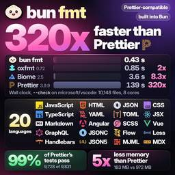

直近1週間の人気フィード
はてなブックマーク数を元に新着優先で並べ替え

「ここ 3 年くらいの CloudWatch アップデート について丸っと解説します」というタイトルで登壇しました #devio2026 82
82 DevelopersIO
DevelopersIO
CloudWatch めっちゃ進化してるぞ！！
1日前

複数サービスに配信するembeddingの品質監視 ── 配信データ・ベクトル空間・推薦スコアの3観点 25 ZOZO TECH BLOG
ZOZO TECH BLOG
はじめに こんにちは、データシステム部MLOpsブロックの木村です。MLOpsブロックではZOZOTOWN、WEAR by ZOZOをはじめとして、弊社で提供するさまざまなサービスに関わるML機能を開発・運用しています。 ZOZOTOWNでは、ユーザーと商品を同じベクトル空間で表現するembeddingを、ホーム画面やメールマガジンなど複数の推薦機能で共有しています。このembeddingは、embedding配信基盤REP（Recommendation Embedding Platform）が定期的に更新し、各推薦機能に配信しています。REPの詳細は以下の記事で紹介しています。 techbl…
2日前

これを待ってた！ 「PhotoCraft」でAIによる生成塗りつぶし・オブジェクトの削除が使えるようになりました、しかも完全無料 72 コリス
コリス
Photoshopをオープンソースで再構築した「PhotoCraft」が早くも日本語フォントの縦書きに対応し、各ツールの使い勝手も向上したとお伝えしたのは先週ですが、あれからさらにバージョンアップを重ね、ついに生成AIも […]
4日前

使いやすくて、操作性もめちゃくちゃ気持ちイイ！ さまざまなアプリに対応したmacOS用のアクションリング -Opie 18 コリス
macOSのさまざまなアプリで、それぞれの機能に対応したサークル状のアクションリングを使えるようにする無料アプリを紹介します。機能やショートカットを実行したり、ランチャーとしてアプリを起動したり、ファイルを変換したり、音 […]
3日前

元フロントエンドエンジニアがプロダクトエンジニアとして強制成長した1年 14 Zennの「frontend」のフィード
Zennの「frontend」のフィード
はじめにこんにちは、プロダクトエンジニアをしているもず（@mozu1206）です。2025年10月に Dress Codeに入社して、1年が経ちました。せっかくなので、この1年を振り返った記事を書いてみます！入社3ヶ月のときに、フロントエンド専任からプロダクトエンジニアになって「強制成長」している話を書きました。あの記事は、ほぼ初めて触るバックエンドやインフラがメインのタスクで どこで詰まって、どう抜けたかの話でした。当時は、知らない単語が出てくるたびに手が止まり、調べて理解する、の繰り返しでした。Dress Codeでは、基本的に1人のエンジニアがフロントエンドから...
2日前

JavaScriptランタイムの「Bun」がPrettier互換で300倍以上高速なフォーマッタに。Prettier設定ファイルもそのまま利用可能 49 Publickey
Publickey
Anthropicが開発しているJavaScriptランタイムの「Bun」の新機能として、Prettier互換のフォーマッタ搭載が発表されました。 2026年10月22日付けでリリースされたBun v1.4.4に搭載されたPrettier互...
4日前

AI 時代の新たなCMS「EmDash」を AWS 環境で動かして、WordPress からの移行を試してみた 3 DevelopersIO
WordPress に近い操作感ながら AI にも対応したCMS 「EmDash」 を AWS へデプロイして、AI エージェントからの記事投稿と WordPress からの移行を試しました。
18時間前

LLMで日常会話に攻撃者の指示を紛れ込ませることはできるのか？（DEF CON 34登壇記） 33 NTT docomo Business Engineers' Blog
Offensive Securityプロジェクトの紹介 DEF CONとは？ 発表内容の紹介 研究の背景：C2通信が普通の文章に見えたら？ 自然言語ステガノグラフィとは TextC2の構成と前提条件 手法1：両側でLLMを使う方式（算術符号化） 手法2：受信側にLLMを必要としない方式（サンプリング） 検証で分かった限界 防御側への示唆 研究倫理と検証範囲 DEF CONでの発表 おわりに こんにちは、イノベーションセンターの上野です。普段はOffensive Securityプロジェクトのメンバーとして、攻撃技術の調査・開発・検証に取り組んでいます。 2026年8月、ラスベガスで開催されたD…
5日前

「DuckDB 2.0 LTS」正式リリース。Quackプロトコルによるクライアント/サーバ機能や非同期処理による高速化など 43 Publickey
DuckDB Foundationは、シングルバイナリで高速なデータ分析を実現するOLAP型データベース「DuckDB 2.0 LTS」（コード名：Cinnamon Teal）の正式リリースを発表しました。 Announcing Duck...
6日前

Genie 4: A new generation of world simulation 16 Google DeepMind News
Google DeepMind News
Genie 4: our new world model unlocking unprecedented realism in real-time simulation.
4日前

【M3 Tech Blog 1000記事達成記念】エムスリーテックブログ1000記事を全部分析して分かった読まれる技術記事のヒミツ 3 エムスリーテックブログ
エムスリーテックブログ
こんにちは、エムスリーエンジニアリンググループ 業務執行役員 VPoEの河合(@vaaaaanquish)です。エムスリーテックブログは投稿記事が1000を超えました🎉 2017年9月、最初の記事から約9年。 合計185人のエンジニア・QA・デザイナー・プロダクトマネージャーが書いてきた1000本の記事を、今回すべて集めて分析しました。業界の時代の変遷から、エムスリーらしい記事まで、まるっと振り返る、そんな1記事となります。 エムスリーテックブログについて どのような記事が話題になってきたのか 他の会社と比較してみると どうやって良い技術記事を生み出しているのか おわりに We are hir…
3日前
Oracle CloudがGoogle TPU導入を発表、2027年に提供を開始。Oracle AI World 2026 4 Publickey
オラクルはGoogleが開発しているAI専用チップのGoogle TPUをOracle Cloud Infrastructure（以下、Oracle Cloud）に導入し、2027年からGoogle TPUのサービスを提供開始すると発表しま...
4日前
オーケストレーションを前提とした体制づくり 4 Wantedly Engineer Blog
Wantedly Engineer Blog
こんにちは、ウォンテッドリー株式会社 執行役員 VPoE の要（@nory_kaname）です。今回のストーリーは...
4日前

AIDDで開発プロセスを再設計する — AI駆動開発の試行錯誤から得た学び 4LINEヤフー Tech Blog (LY Corporation Tech Blog
こんにちは。LINEヤフー株式会社 ショッピングSBUの新堂です。Yahoo!ショッピングでは、AIDD（AI Driven Development）の推進メンバーとともに開発プロセスの再設計に取り組...
5日前